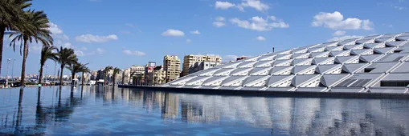

I'll be honest — I used to think flying out of Kuwait meant choosing between Dubai, Istanbul, or London. The usual suspects. Nothing wrong with those cities, but after a few years of the same rotation, I started craving something different. Somewhere I hadn't already Instagram'd to death.
That's when I started digging into lesser-known routes from the Gulf region. Turns out, there's a whole world of affordable, underrated destinations just a few hours away — places with real character, fewer crowds, and prices that actually make sense. Here are eight spots I think deserve a spot on your radar this year.
1. Yerevan, Armenia
Yerevan caught me off guard. I went expecting a quiet, somewhat sleepy capital — what I found was a city buzzing with outdoor cafés, incredible food, and some of the friendliest locals I've ever met. The Old Town is walkable, the wine is surprisingly good (Armenia has one of the oldest winemaking traditions in the world), and everything from meals to hotels costs a fraction of what you'd pay in Western Europe.
The flight from Kuwait is around three hours, and carriers like Jazeera Airways run direct routes that keep the cost down. I'd recommend going in late spring or early fall when the weather is perfect for hiking around Garni Gorge.
2. Batumi, Georgia
Georgia has been on the travel radar for a while now, but most people head straight to Tbilisi. Batumi, the coastal city on the Black Sea, is a different vibe entirely. Think palm-lined boulevards, a lively boardwalk, and a mix of modern architecture next to old Soviet-era buildings. It's quirky, affordable, and genuinely fun.
Street food here is next level — khachapuri (cheese-filled bread) alone is worth the trip. And with budget airlines now offering direct flights from Kuwait, getting there has never been easier or cheaper.
3. Budapest, Hungary
Budapest is one of those cities that punches way above its weight. The thermal baths alone are reason enough to visit — Széchenyi Baths feel like stepping into a grand palace, except you're in a swimsuit and the water is naturally heated. The ruin bars in the Jewish Quarter are unlike anything else in Europe, and the food scene has grown into something really special over the past few years.
What surprised me most was the price. Compared to Paris or Rome, Budapest is remarkably affordable. A proper sit-down dinner with wine might run you 15-20 euros. I found round-trip flights from Kuwait through Jazeera Airways at prices that made me double-check the screen.
4. Hurghada, Egypt
If you want beach and sun without the premium price tag of the Maldives, Hurghada delivers. The Red Sea coast here is genuinely stunning — crystal-clear water, vibrant coral reefs, and some of the best snorkeling and diving in the world. It's not fancy in the boutique-hotel sense, but the all-inclusive resorts offer solid value, and the diving is world-class.
A two-hour flight from Kuwait puts you right there. Perfect for a long weekend when you just need to decompress.
5. Krakow, Poland
Krakow is the kind of city that makes you want to walk everywhere. The main square — Rynek Główny — is one of the largest medieval squares in Europe, and it's surrounded by cafés, churches, and street performers. The Kazimierz district has this artsy, bohemian energy that reminded me a bit of Brooklyn, but with 600-year-old buildings.
Poland in general is incredibly affordable for travelers from the Gulf. Your Kuwaiti dinar goes a long way here. And the pierogi? Life-changing. I'm not exaggerating.
Booking Tips for Budget Flights
- Book early: Fares from Kuwait to Europe are cheapest 6-8 weeks before departure
- Be flexible with dates: Midweek flights (Tuesday-Thursday) are often 20-30% cheaper
- Check bank card deals: Several Kuwait banks offer 10% off on airline bookings — NBK, KFH, and Boubyan all run regular promotions
- Travel light: Budget carriers charge for checked bags, so pack smart and save
- Use airline apps: Mobile check-in saves time and sometimes unlocks app-only deals
6. Prague, Czech Republic
Prague is no secret, but it's still underrated for Gulf-based travelers who tend to default to London or Paris. The city is drop-dead gorgeous — all cobblestone streets, Gothic spires, and bridges that look like they belong in a painting. But beyond the postcard views, Prague has a thriving food and beer scene (Czech beer is arguably the best in the world, and it costs less than water in some places).
The Charles Bridge at sunrise, before the crowds arrive, is one of those travel moments that sticks with you. Direct flights from Kuwait make this an easy add to any European itinerary.
7. Antalya, Turkey
Turkey is always a solid choice, but Antalya specifically deserves more attention from Gulf travelers. The Turkish Riviera coastline is stunning, the old town (Kaleiçi) is full of charm, and the combination of beach, history, and food is hard to beat anywhere in the Mediterranean.
What I appreciate about Antalya is the range — you can do luxury resorts or budget guesthouses, Michelin-level dining or street-side kebabs. It works for every budget. Jazeera Airways flies this route regularly, and the fares are consistently reasonable.
8. Sochi, Russia
This one might raise some eyebrows, but hear me out. Sochi sits right where the Caucasus Mountains meet the Black Sea, which gives it this unusual combination of beach town and mountain resort. In summer, you get warm beaches and subtropical gardens. In winter, there's skiing just 30 minutes from the coast. The 2014 Olympics left behind solid infrastructure — modern hotels, good roads, and a surprisingly polished feel.
It's not the easiest destination to navigate if you don't speak Russian, but that's part of the adventure. And the seafood along the coast is fresh, abundant, and cheap.
Making It Work on a Budget
The biggest shift in Gulf travel over the past few years has been the rise of budget-friendly airlines connecting Kuwait and the wider region to destinations that used to require expensive connections through major hubs. Airlines like Jazeera Airways have opened up direct routes to places like Yerevan, Budapest, and Batumi — cities that were once two-stop journeys are now a quick, affordable hop.
My advice? Pick one destination you've never considered, book a flight, and go with minimal planning. Some of the best travel experiences come from just showing up and figuring it out. These eight cities are all forgiving for spontaneous travelers — walkable, affordable, and full of surprises.
The Bottom Line
You don't need a massive budget or two weeks of vacation time to have a meaningful trip. A long weekend in Krakow or four days in Batumi can reset your perspective just as well as a grand European tour. The flights are there, the prices are right, and these destinations are waiting to be explored.
Start with one. I promise you'll come back planning the next.